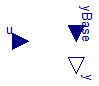
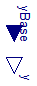
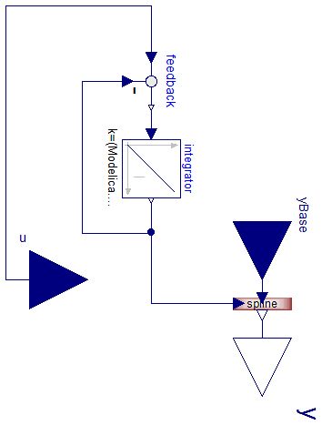
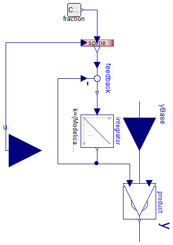
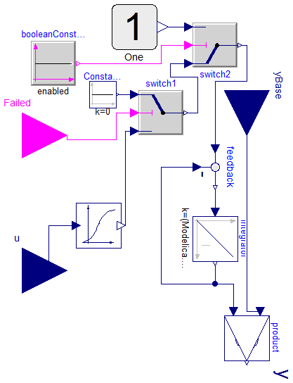

Multiplication Effects
Information
Extends from Modelica.Icons.Package (Icon for standard packages).
Package Content
effect = u/NormalValue

Information
y = yBase * u
Extends from Icons.BaseFactorIcon.
Parameters
| Type | Name | Default | Description |
|---|
| Real | NormalValue | 1 | Normal value of u, because y=(u/NormalValue)*yBase. |
| Boolean | enabled | true | disabled => y=yBase |
Connectors
Modelica definition
model Normalization
"effect = u/NormalValue"
extends Icons.BaseFactorIcon;
parameter Real NormalValue=1
"Normal value of u, because y=(u/NormalValue)*yBase.";
parameter Boolean enabled=true
"disabled => y=yBase";
Modelica.Blocks.Interfaces.RealInput u;
Types.Fraction effect;
equation
effect =
if enabled
then u/NormalValue
else 1;
y=effect*yBase;
end Normalization;
effect = 1 - DamagedAreaFraction

Information
Extends from Icons.BaseFactorIcon.
Parameters
| Type | Name | Default | Description |
|---|
| Fraction | DamagedAreaFraction | 0 | [1] |
Connectors
Modelica definition
effect = spline(data,u)
Information
Extends from Icons.BaseFactorIcon4.
Parameters
| Type | Name | Default | Description |
|---|
| Boolean | enabled | true | disabled => y=yBase |
| Real | data[:, 3] | | Array of interpolating points as {x,y,slope} |
| Real | Xscale | 1 | conversion scale to SI unit of x values |
| Real | Yscale | 1 | conversion scale to SI unit of y values |
| Boolean | UsePositiveLog10 | false | x = if u/scaleX <=1 then 0 else log10(u/scaleX) |
Connectors
Modelica definition
model Spline
"effect = spline(data,u)"
extends Icons.BaseFactorIcon4;
Modelica.Blocks.Interfaces.RealInput u(nominal=Xscale);
parameter Boolean enabled=true
"disabled => y=yBase";
parameter Real[:,3] data
"Array of interpolating points as {x,y,slope}";
parameter Real Xscale = 1
"conversion scale to SI unit of x values";
parameter Real Yscale = 1
"conversion scale to SI unit of y values";
parameter Boolean UsePositiveLog10 = false
"x = if u/scaleX <=1 then 0 else log10(u/scaleX)";
Types.Fraction effect
"Multiplication coeffecient for yBase to reach y";
protected
parameter Real a[:,:] =
if enabled
then Interpolation.SplineCoefficients(
data[:, 1],data[:, 2]*Yscale,data[:, 3]*Yscale)
else zeros(1,1)
"Cubic polynom coefficients of curve segments between interpolating points";
equation
effect =
if not enabled
then 1
elseif UsePositiveLog10
then Interpolation.Spline(data[:, 1],a,
if u/Xscale <= 1
then 0
else log10(u/Xscale))
else Interpolation.Spline(data[:, 1],a,u/Xscale);
y=effect*yBase;
end Spline;
Adapt the input signal before interpolation

Information
If the input signal u is constant and it is different from starting delayed input d, the middle value between u and d will be reached after HalfTime.
The mathematical background:
d'(t) = k*(u(t) - d(t)) => The solution of d(t) in special case, if u(t) is constant at each time t: d(t)=u+(d(0)-u)*e^(-k*t), where the definition of HalfTime is d(HalfTime) = d(0) + (d(0)-u)/2.
Extends from Icons.BaseFactorIcon5.
Parameters
| Type | Name | Default | Description |
|---|
| Boolean | enabled | true | disabled => y=yBase |
| Time | HalfTime | | [s] |
| Real | initialValue | 1 | as u/Xscale |
| Real | Xscale | 1 | conversion scale to SI unit of x values |
| Real | Yscale | 1 | conversion scale to SI unit of y values |
| Boolean | UsePositiveLog10 | false | x = if u_delayed/scaleX <=1 then 0 else log10(u_delayed/scaleX) |
| Real | data[:, 3] | | |
Connectors
Modelica definition
model LagSpline
"Adapt the input signal before interpolation"
extends Icons.BaseFactorIcon5;
Modelica.Blocks.Interfaces.RealInput u;
parameter Boolean enabled=true
"disabled => y=yBase";
parameter Types.Time HalfTime(displayUnit="min");
//=3462.468;
parameter Real initialValue = 1
"as u/Xscale";
parameter Real Xscale = 1
"conversion scale to SI unit of x values";
parameter Real Yscale = 1
"conversion scale to SI unit of y values";
parameter Boolean UsePositiveLog10 = false
"x = if u_delayed/scaleX <=1 then 0 else log10(u_delayed/scaleX)";
parameter Real[:,3] data;
Blocks.Math.Integrator integrator(k=(
Modelica.Math.log(2)/
HalfTime), y_start=initialValue*Xscale,
NominalValue=Xscale);
Modelica.Blocks.Math.Feedback feedback;
Types.Fraction effect;
Spline spline(
data=data,
Xscale=Xscale,
Yscale=Yscale,
UsePositiveLog10=UsePositiveLog10,
enabled=enabled);
equation
effect = spline.effect;
connect(feedback.y, integrator.u);
connect(integrator.y, feedback.u2);
connect(feedback.u1, u);
connect(integrator.y, spline.u);
connect(yBase, spline.yBase);
connect(spline.y, y);
end LagSpline;
Adapt the effect after interpolation

Information
Extends from Icons.BaseFactorIcon3.
Parameters
| Type | Name | Default | Description |
|---|
| Boolean | enabled | true | disabled => y=yBase |
| Time | HalfTime | | [s] |
| Real | Xscale | 1 | conversion scale to SI unit of x values |
| Boolean | UsePositiveLog10 | false | x = if u/scaleX <=1 then 0 else log10(u/scaleX) |
| Real | data[:, 3] | | |
| IO |
| Value I/O |
| String | stateName | getInstanceName() | Name in Utilities input/output function |
Connectors
Modelica definition
model SplineLag
"Adapt the effect after interpolation"
extends Icons.BaseFactorIcon3;
Modelica.Blocks.Interfaces.RealInput u;
parameter Boolean enabled=true
"disabled => y=yBase";
parameter Types.Time HalfTime(displayUnit="d");
//Tau(unit="day");
parameter String stateName=
getInstanceName()
"Name in Utilities input/output function";
parameter Real Xscale = 1
"conversion scale to SI unit of x values";
parameter Boolean UsePositiveLog10 = false
"x = if u/scaleX <=1 then 0 else log10(u/scaleX)";
parameter Real[:,3] data;
Modelica.Blocks.Math.Product product;
Blocks.Math.Integrator integrator(y_start=1, k=(
Modelica.Math.log(2)/HalfTime),
stateName=stateName);
Modelica.Blocks.Math.Feedback feedback;
Types.Fraction effect;
Spline spline(
data=data,
Xscale=Xscale,
UsePositiveLog10=UsePositiveLog10,
enabled=enabled);
Types.Constants.FractionConst fraction(k(displayUnit="1") = 1);
equation
//der(effect) = (ln(2)/HalfTime)*(spline(data,u)-effect)
effect = integrator.y;
connect(yBase, product.u1);
connect(product.y, y);
connect(feedback.y, integrator.u);
connect(integrator.y, feedback.u2);
connect(integrator.y, product.u2);
connect(feedback.u1, spline.y);
connect(u, spline.u);
connect(fraction.y, spline.yBase);
end SplineLag;
LagSpline if not Failed

Information
Extends from Icons.BaseFactorIcon2.
Parameters
| Type | Name | Default | Description |
|---|
| Boolean | enabled | true | disabled => y=yBase |
| Time | HalfTime | | [s] |
| Real | data[:, 3] | | |
| Real | Xscale | 1 | conversion scale to SI unit of x values |
| IO |
| Value I/O |
| String | stateName | getInstanceName() | Name in Utilities input/output function |
Connectors
Modelica definition
model SplineLagOrZero
"LagSpline if not Failed"
extends Icons.BaseFactorIcon2;
Modelica.Blocks.Interfaces.RealInput u;
parameter Boolean enabled=true
"disabled => y=yBase";
parameter Types.Time HalfTime(displayUnit="d");
parameter Real[:,3] data;
parameter String stateName=
getInstanceName()
"Name in Utilities input/output function";
parameter Real Xscale = 1
"conversion scale to SI unit of x values";
Interpolation.Curve
curve(
x=data[:, 1],
y=data[:, 2],
slope=data[:, 3],
Xscale=Xscale);
Modelica.Blocks.Math.Product product;
Blocks.Math.Integrator integrator(y_start=1, k=(
Modelica.Math.log(2)/HalfTime),
stateName=stateName);
Modelica.Blocks.Math.Feedback feedback;
Modelica.Blocks.Logical.Switch switch1;
Modelica.Blocks.Sources.Constant Constant1(k=0);
Modelica.Blocks.Interfaces.BooleanInput
Failed;
Types.Fraction effect;
Modelica.Blocks.Logical.Switch switch2;
Types.Constants.OneConst One;
Modelica.Blocks.Sources.BooleanConstant booleanConstant(k=enabled);
equation
effect = integrator.y;
connect(curve.u, u);
connect(yBase, product.u1);
connect(product.y, y);
connect(feedback.y, integrator.u);
connect(integrator.y, feedback.u2);
connect(integrator.y, product.u2);
connect(curve.val, switch1.u3);
connect(Constant1.y, switch1.u1);
connect(switch1.u2, Failed);
connect(switch2.y, feedback.u1);
connect(booleanConstant.y, switch2.u2);
connect(switch2.u1, switch1.y);
connect(One.y, switch2.u3);
end SplineLagOrZero;
Automatically generated Tue Sep 15 22:55:05 2015.
 Physiolibrary.Blocks.Factors.Normalization
Physiolibrary.Blocks.Factors.Normalization Physiolibrary.Blocks.Factors.DamagedFraction
Physiolibrary.Blocks.Factors.DamagedFraction Physiolibrary.Blocks.Factors.Spline
Physiolibrary.Blocks.Factors.Spline Physiolibrary.Blocks.Factors.LagSpline
Physiolibrary.Blocks.Factors.LagSpline Physiolibrary.Blocks.Factors.SplineLag
Physiolibrary.Blocks.Factors.SplineLag Physiolibrary.Blocks.Factors.SplineLagOrZero
Physiolibrary.Blocks.Factors.SplineLagOrZero